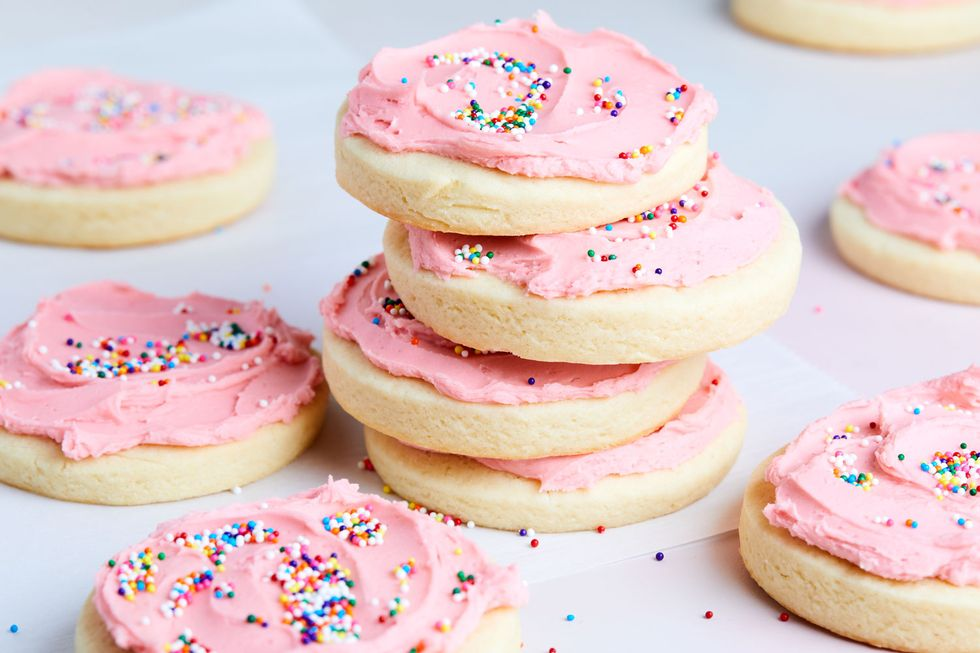

LOFTHOUSE COOKIES
Prep time:2hours 30 mins
Yield: 15
Ingredients
Steps
- In a large bowl, whisk together flour, cornstarch, baking powder, and salt.
- In another large bowl using a hand mixer, beat butter, cream cheese, and sugar together until light and fluffy. Add egg and extracts and beat until well combined. Add dry ingredients and beat until just combined. Transfer dough to plastic wrap and smooth into a disc. Dough will still be soft and sticky at this point. Refrigerate until well chilled, at least 1 hour.
- Bake until edges are just set, but centers are still slightly underdone, 10 to 12 minutes. Cookies shouldn’t gain much color on top. Let cool completely on baking sheets.